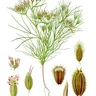

Oil Grimoire
Lavandin Essential Oil

Cumin Essential OilLavandin Essential Oil is steam-distilled from the fresh flowering tops of Lavender (Lavandula x intermedia), the hybrid of true lavender and spike lavender. Its profile combines the qualities of both parents and yields more oil per harvest than either one alone.
Extraction & Characteristics
The oil is produced by steam distillation from the fresh flowering tops, with a notably higher yield than either true lavender or aspic. A concrete and absolute are also produced by solvent extraction. The finished oil is a colourless or pale yellow liquid with a fresh camphoraceous topnote, which should not be too strong in a good quality oil, over a woody herbaceous undertone. Its principal constituents are linalyl acetate at 30 to 32 percent, with linalol, cineol, camphene, pinene, and other trace constituents.
Therapeutic Uses
Lavandin is used in much the same way as true lavender, but it is more penetrating and rubefacient and carries a sharper scent. This makes it especially well suited to respiratory, circulatory, and muscular conditions.
Blending
Lavandin blends well with  Clove Essential Oil,
Clove Essential Oil,  Bay Laurel Essential Oil,
Bay Laurel Essential Oil,  Cinnamon Bark Essential Oil,
Cinnamon Bark Essential Oil,  Citronella Essential Oil,
Citronella Essential Oil,  Cypress Essential Oil,
Cypress Essential Oil,  Pine Essential Oil,
Pine Essential Oil,  Clary Sage Essential Oil,
Clary Sage Essential Oil,  Geranium Essential Oil,
Geranium Essential Oil,  Common Thyme Essential Oil,
Common Thyme Essential Oil,  Patchouli Essential Oil,
Patchouli Essential Oil,  Rosemary Essential Oil, and citrus oils, especially
Rosemary Essential Oil, and citrus oils, especially  Bergamot Essential Oil and Lime Essential Oil.
Bergamot Essential Oil and Lime Essential Oil.
Where You Will Encounter It
Lavandin is used extensively in soaps, detergents, room sprays, hair preparations, and industrial perfumes. It also serves as a flavour ingredient in most major food categories and as a natural commercial source of linalol and linalyl acetate.
Therapeutic Applications
- Dysmenorrhoea: Apply via massage, compress, or bath.
- Headache: Apply via massage, compress, or vaporization.
- Nervous Exhaustion: Apply via massage, bath, or vaporization.
- Nausea & Vomiting: Apply via massage or vaporization.
- Colic: Apply via massage.
- Catarrh: Apply via massage, vaporizer/diffuser, or gentle inhalation.
- Bronchitis: Apply via massage, vaporizer/diffuser, or gentle inhalation.
- Asthma: Apply via massage, vaporizer/diffuser, or gentle inhalation.
- Rheumatism: Apply via massage, compress, or bath.
- Aches and Pains: Apply via massage, compress, or bath.
- Burns: Apply via compress or neat application.
- Boils, Abscesses & Blisters: Apply via skin oil/lotion, compress, or bath.
- Acne: Apply via massage, skin oil/lotion, flower water, bath, inhalation (steam), or neat application.
- Congested & Dull Skin: Apply via massage, skin oil/lotion, flower water, bath, or inhalation (steam).
- Cuts & Sores: Apply via skin oil/lotion or compress.
- Dry & Sensitive Skin: Apply via massage, skin oil/lotion, flower water, or bath.
- Eczema: Apply via massage, skin oil/lotion, flower water, or bath.
- Insect Bites: Apply via skin oil/lotion or neat application.
- Lice: Apply via skin oil/lotion or hair care.
- Muscular Cramp & Stiffness: Apply via massage, compress, or bath.
- Irritated & Inflamed Skin: Apply via skin oil/lotion, compress, flower water, or bath.
- Scabies: Apply via skin oil/lotion.
- Spots: Apply via skin oil/lotion or neat application.
- Wounds: Apply via skin oil/lotion, compress, or bath.
- Sprains & Strains: Apply via compress.
- Halitosis: Apply via mouthwash or gargle.
- Laryngitis & Hoarseness: Apply via steam inhalation.
- Shock: Apply via massage, bath, or vaporization.
- Vertigo: Apply via vaporization or steam inhalation.
- Sore Throat: Apply via vaporization or steam inhalation.
- Cramp & Gastric Spasm: Apply via massage or compress.
- Indigestion & Flatulence: Apply via massage.
- Leucorrhoea: Apply via bath or douche.
- Cystitis: Apply via compress, bath, or douche.